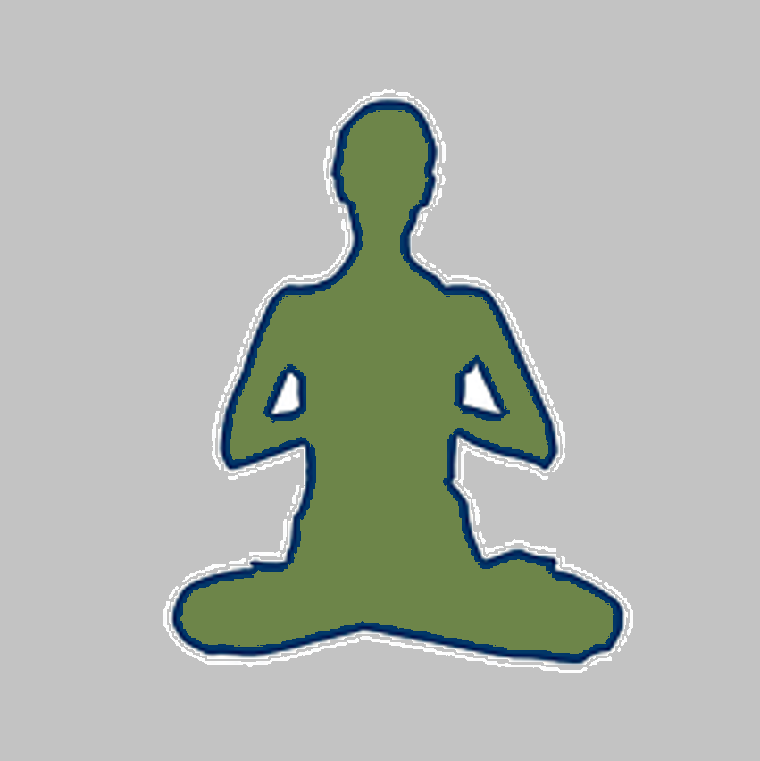

Einleitung
Suche dir eine Uebung die zu dir und deinem aktellen Zustand passt.
Bedeutung der anweisenden Klaenge:
HA = einatmen,
HU = ausatmen,
HM = halten.
Hier findest du Tools die dich bei deiner Achtsamkeitspraxis unterstuetzen
Suche dir eine Uebung die zu dir und deinem aktellen Zustand passt.
Bedeutung der anweisenden Klaenge:
HA = einatmen,
HU = ausatmen,
HM = halten.

Fuer mehr Energie. Vorbereitung auf Belastung/Arbeit.
Ein guter refresher fuer zwischendurch, ohne viel aenderung am aktuellen energetischen Zustand zu aendern.
Aktiviert Parasymphatikus, baut Stress ab.
Diese Atemtechniken leiten nahtlos in eine Meditation ueber, bzw. sind selber schon fast Meditationstechniken.
In Zukunft sollen folgende Features dazukommen: